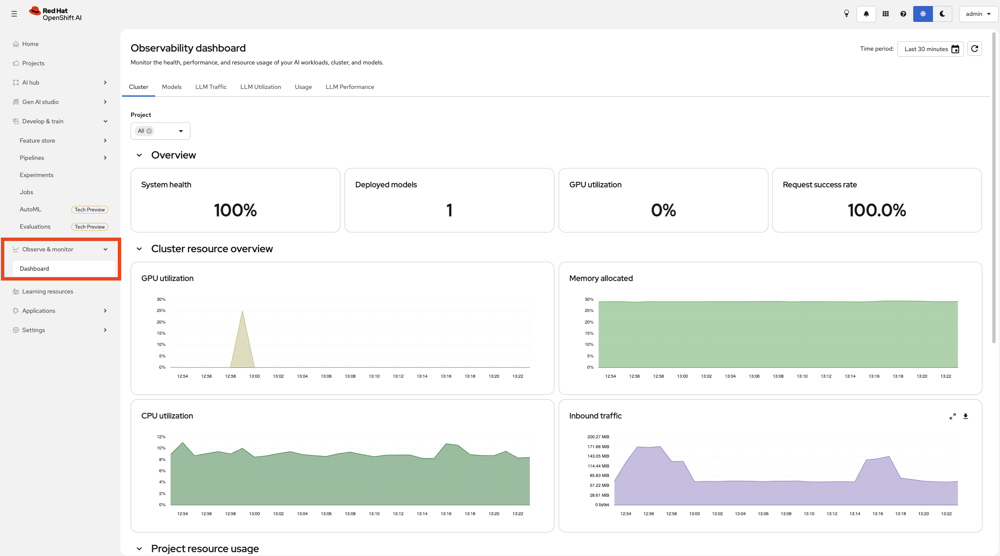

GPU and Resource Monitoring
Logs show what happened, traces show why — but metrics show how much and how fast. In this module you will use the OpenShift Console built-in monitoring to observe GPU utilisation and pod resource consumption for the Inference Design Planner.
Learning Objectives
By the end of this module you will be able to:
-
Query GPU utilisation and memory metrics via the OpenShift Console
-
Monitor pod CPU and memory usage for AI application workloads
-
Interpret bursty GPU utilisation patterns typical of LLM inference
Why GPU Monitoring Matters
AI workloads behave differently from traditional applications:
-
Bursty utilisation — LLM inference creates intense GPU spikes followed by idle periods
-
Memory pressure — Large models consume significant VRAM; running out causes OOM failures
-
Cost implications — GPUs are expensive; understanding utilisation helps right-size deployments
Exercise: Observe GPU and Pod Metrics
Use the Built-in Dashboards
OpenShift provides pre-built dashboards that show GPU and pod metrics without writing any queries.
-
In the OpenShift Console, navigate to Observe > Dashboards.
-
Select Kubernetes / Compute Resources / Namespace (Pods) from the dashboard dropdown and set the namespace filter to
demo.This shows CPU usage, memory usage, and network I/O for all pods in the namespace at a glance.
-
To view GPU metrics, select a GPU-related dashboard (e.g., NVIDIA DCGM Exporter) from the dropdown.

Send a few requests to the Inference Design Planner and watch the dashboards. You should see GPU spikes during inference that drop back to idle between requests — this bursty pattern is typical of LLM workloads.
|
For ad-hoc queries, switch to Observe > Metrics and enter PromQL directly. For example, |
Traces and Logs Are Complementary
Together, the three pillars give you complete observability:
| Pillar | Tool | Answers |
|---|---|---|
Logs (Module 2) |
OpenShift Console pod logs |
What exactly happened? |
Traces (Module 3) |
MLflow Experiments |
Why did it happen? What was the flow? |
Metrics (Module 4) |
Observe > Metrics (Prometheus) |
How much resource did it use? Where is the bottleneck? |
Module Summary
What you accomplished:
-
Queried GPU utilisation, memory, and temperature using NVIDIA DCGM metrics
-
Monitored pod CPU and memory usage with PromQL
-
Observed bursty GPU patterns during LLM inference
Key takeaways:
-
GPU utilisation is bursty for LLM workloads — spikes during inference, idle between requests
-
GPU memory (VRAM) is typically the limiting factor; monitoring prevents OOM failures
-
Correlating metrics with traces (Module 3) and logs (Module 2) gives you end-to-end visibility
What to monitor in production:
-
GPU compute utilisation (
DCGM_FI_DEV_GPU_UTIL) — sustained high values indicate the GPU is the bottleneck -
VRAM usage (
DCGM_FI_DEV_FB_USED) — approaching the limit risks OOM failures -
GPU temperature (
DCGM_FI_DEV_GPU_TEMP) — sustained >80°C may cause thermal throttling -
Pod CPU/memory — steady growth can signal memory leaks; spikes near limits risk OOMKilled
|
For custom dashboards with alerting, thresholds, and multi-metric panels, consider integrating Grafana with the OpenShift Prometheus data source. Grafana lets you build tailored views that combine GPU, pod, and application-level metrics in a single pane of glass. |
Next steps:
Proceed to the Closing to review what you have learned and find additional resources for continuing your AgentOps journey.